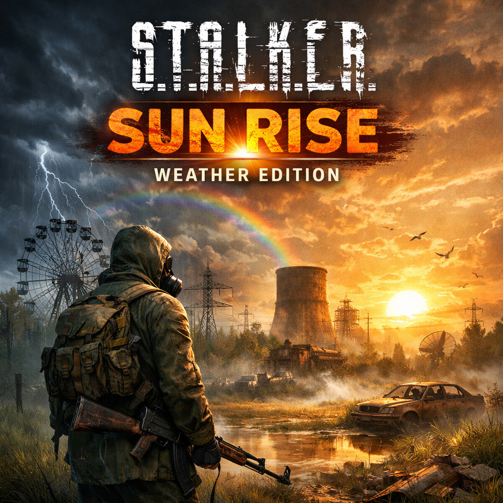
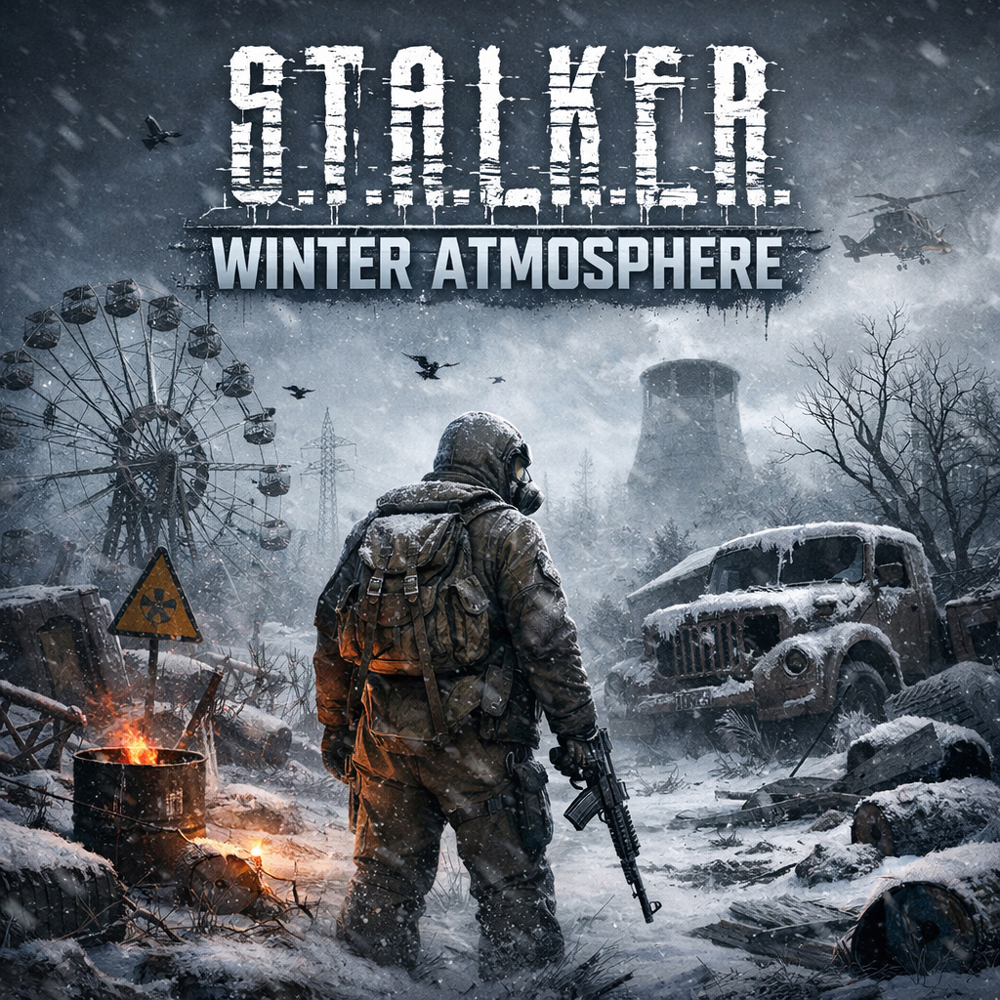
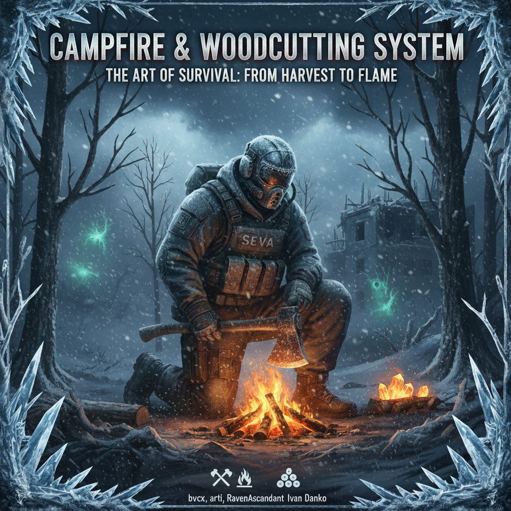
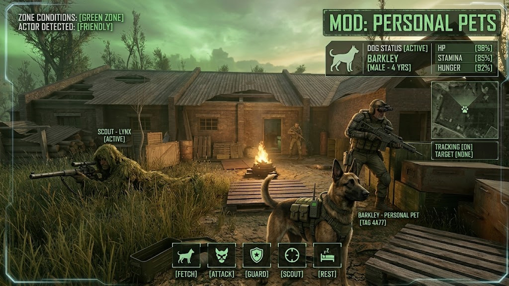
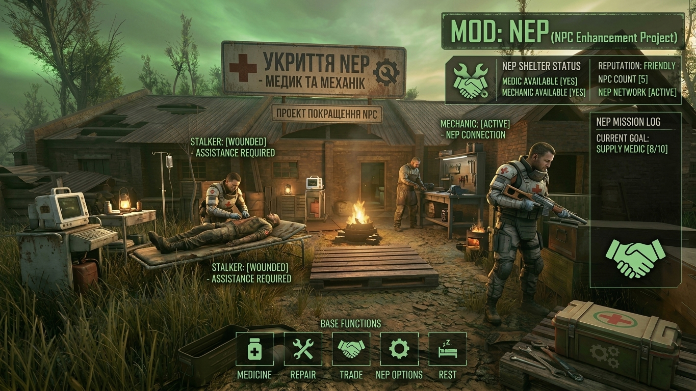
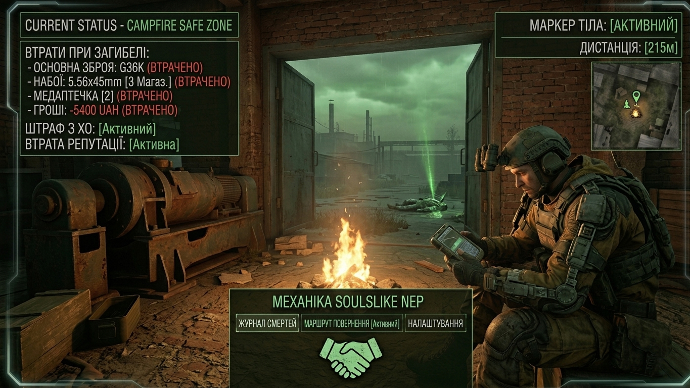
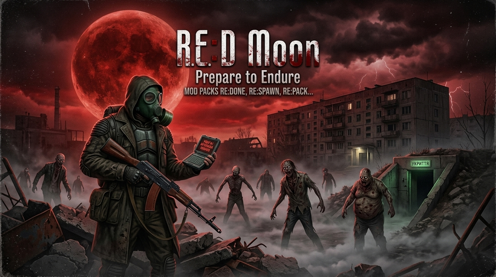

☢ S.T.A.L.K.E.R. ANOMALY ☢
⚠️ ОБОВ'ЯЗКОВО прочитайте розділ РЕКОМЕНДАЦІЇ перед початком нової гри.
Build Trinity — це не просто модифікація, а монументальна переробка візуального та геймплейного досвіду. В основі проєкту лежить понад сотня ретельно відібраних та інтегрованих модифікацій, що створюють єдину, безшовно працюючу екосистему. Це світ, де кожна текстура просякнута історією, а кожен крок може стати останнім.
Час тут застиг разом із подихом. Це світ білого безмовля, де панують люті морози та сліпучі метелі. Завдяки спеціальним налаштуванням шейдерів, лід та іній на занедбаній техніці виглядають фізично відчутними. Виживання перетворюється на боротьбу за кожен ковток теплого повітря.
Класичний дух Зони, де панує вічний листопад. Тут ви не побачите жодного променя сонця — лише важке свинцеве небо, нескінченні зливи, грози та гнітючу сльоту. Глибока корозія та густий туман створюють атмосферу старого доброго «Сталкера».
Рідкісна мить, коли природа намагається повернути своє. Яскраве літнє сонце підсвічує те, що зазвичай приховано темрявою. Ви почуєте спів птахів та шелест буйної зелені, що поглинає руїни цивілізації.
Завантажте офіційний інсталятор збірки Build Trinity (TrinityInstaller.exe) за допомогою кнопки нижче
Запустіть TrinityInstaller.exe, виберіть потрібну мову інтерфейсу та місце встановлення на вашому диску
Натисніть кнопку встановлення та чекайте, поки інсталятор завершить процес. Якщо у вас не встановлено 7-Zip, інсталятор встановить його автоматично
Після встановлення головна папка гри буде називатись Anomaly_build_TRINITY — не змінюйте цю назву
Завантажте фікс
Відкривати та розпаковувати тільки архіватором 7z
Вміст архіву скопіюйте до папки з грою та погодьтесь із заміною файлів
Всі патчі та фікси знаходяться в телеграм-каналі
Зайдіть у папку з грою у папку MO та запустіть файл run_mo2.bat — він налаштує вам Mod Organizer
Знайдіть у папці з грою файл Launcher_TRINITY.exe і створіть ярлик на робочому столі для запуску збірки. Гру запускати тільки за допомогою лаунчера.
Якщо з якоїсь причини пункт 1 не спрацював, Вам потрібно зайти в папку з грою в папку МО і запустити ModOrganizer.exe, якщо він запросить вказати шлях до папки з грою, вкажіть папку Anomaly_build_TRINITY, якщо у Вас МО не знаходить файл запуску гри AnomalyDX11AVX.exe, Вам потрібно в МО вгорі праворуч, ліворуч від кнопки ЗАПУСТИТИ натиснути на вікно з вибором файлу запуску гри, вище натиснути на редагувати, натиснути вище значка + і вибрати Додати з файлу, вибрати папку з грою, зайти в bin і вибрати AnomalyDX11AVX.exe, після чого праворуч нижче натиснути на ОК. .

Ясно: Сонячних днів більше — це справжнє літо Зони.
Мінлива хмарність: З'являється частіше, ніж в інші сезони.
Хмарно: Зона не відпускає повністю навіть влітку.
Дощ та гроза: Без обмежень — важкі й раптові шторми.
Туман: Став рідкістю — приходить на коротко, ненадовго.
Викиди: Система перемикається на передштормовий стан автоматично.
Тривога: Небо стає тривожним ще до сирени.
Метеорити: Ясних ночей більше — метеорити з'являються частіше.
Далекі блискавки: На горизонті спалахують у реальному напрямку.
Постійний туман: Два шари — атмосферна димка та пилова серпанка.
Нічний туман: З 01:00 до 03:00 — коротка літня ніч.
Спокійне листя: З 10:00 до 19:00 дрейфує повільно у спеку.
Вечірнє листя: З 18:00 до 21:00 тепловий вітер піднімає його вище.
Мошкара: На болотах — Zatон, Янтар, Болото — з 09:00 до 20:00.
Світлячки: З 18:00 до 05:00 за ясної та мінливої погоди.
Вологість: Передає літню атмосферу болотистих локацій.
Літні ранки: Чисті та яскраві — у них вся суть сезону.
Пилова буря: Під час дощу та грози активується серпанка.
Гаряче повітря: Хвиля гарячого повітря під час штормів.
Вихор: На горизонті раз на кілька хвилин — далеко від гравця.
Справжня стихія: Шторм влітку відчувається по-іншому, напруженіше.
Під землею: Густий підземний туман і пил, як завжди.
Листя не входить: Мошкара та світлячки залишаються зовні.
В приміщеннях: Легкий пиловий ефект затхлого повітря.
Без сезонних змін: Літо залишається зовні в будь-якій локації.

Ясно: Рідкість у Зоні — сонячні дні обмежені у частоті.
Хмарність: Мінлива та хмарна погода чергуються природно протягом годин.
Дощ: Тривалість від кількох до багатьох ігрових годин.
Гроза: Шість основних типів погоди з 10-20 унікальними пресетами кожна.
Туман: Найтривожніший вид — небо стає густим та важким.
Сирена: Система перемикається на передштормовий стан автоматично.
Атмосфера: Небо стає тривожним ще до викиду або пси-шторму.
Метеорити: Видно у ясні ночі з 22:00 до 04:00 на відкритих локаціях.
Далекі грози: Блискавки на горизонті розгортаються у реальному напрямку.
Постійний туман: Два шари атмосфери — задимка та пилова серпанка.
Нічний туман: З 00:00 до 04:00 третій густіший шар тумана.
Листя: Літає у вечірні години (17:00-20:00) на відкритих локаціях.
Вогники: Torchbugs з'являються з 17:00 до 05:00 за безхмарної погоди.
Пилова серпанка: Активується під час дощу та грози від граупелю.
Гарячий туман: Під час грози додається ефект, що підкреслює напругу.
Турбулентне листя: Під час шторму листя рухається хаотично.
Динаміка: Кожна гроза унікальна завдяки множині варіантів.
Бункери: Атмосферні частинки замінюються на підземні шари.
Підземний смог: Кілька рівнів густого пилового туману в лабораторіях.
Приміщення: Легкий пиловий ефект передає затхле повітря закритих просторів.
Локації: Листя та вогники не з'являються під землею або в приміщеннях.
Автоматична корекція: Система підлаштовує яскравість залежно від погоди.
Нічні сцени: Власні параметри для R4 рендерера.
Підземелля: Окремі налаштування яскравості для закритих просторів.
Атмосфера: Час доби та місцезнаходження впливають на рендеринг сцени.


Клімат: Вітер, дощ та ніч висмоктують тепло.
Сонце: Прямі промені — твій безкоштовний обігрівач.
Вода: Мокрі ноги — прямий крок до зустрічі з прабатьками.
Тепло: Шукай вогонь. Він відокремлює тебе від вічного сну.
Рух — це життя: Біг прискорює метаболізм. Стояти в мороз — смертельно.
Броня: Тільки екзоскелети та «СЕВИ» мають належну теплоізоляцію.
Артефакти: «Кристал» або «Око» зігріють навіть у найлютішу негоду.
Метаболізм: Ситий сталкер чинить опір холоду набагато краще.
Гаряча їжа: Їж одразу після казанка — тільки гарячa зігріє зсередини.
Індикація: Червона іконка — гаряча, жовта — тепла, без кольору — крижана.
Допінг: Чай і горілка — план «Б». Але алкоголь дає лише тимчасовий ефект.
Симптоми: Стукіт зубів, тремтіння, іній на шоломі — терміново шукай вогонь.
Стійкість: Межа обмороження — 4000 одиниць. Наслідки тривалі.
Хвороба: Лихоманка: витривалість нуль, здоров'я тане.
Реабілітація: Ліжко, ковдра, сон. Антибіотики не зайві.

Ручна робота: Знайди дерево або пень і влупи по ньому. Магічної появи дров немає.
Точність удару: 10 влучних ударів — і оберемок дров у руках.
Знос інструменту: Кожен удар виснажує зброю. Лагодь сокиру та обирай правильний інструмент!
Рівна поверхня: 5-точкове сканування ландшафту. На схилі вогонь не розпалити.
Час: Від 5 до 10 ігрових хвилин на облаштування та розпалювання.
Очищення зони: Стара фурнітура та покинуті багаття прибираються (якщо увімкнено в MCM).
Томагавк: Найгірший вибір — величезний знос.
Туристична сокира: Середня надійність для звичайних сталкерів.
Важка сокира: Мінімальний знос, максимальний результат.
Коли назбираєш достатньо дров — ПДА подасть сигнал: «Ви зібрали достатньо дров для багаття». Тепер можна відпочити.
Порада виживальника: Слідкуй за станом сокири! Якщо доведеш її до критичного стану під час рубки — вона може стати непридатною для бою в найневідповідніший момент.

На повний зріст: Видимість максимальна — ворог легко помітить твій силует.
Присідання в траві: Помітність кардинально падає — ти стаєш частиною ландшафту.
Градієнт видимості: Чим нижче ти присідаєш, тим менше шансів бути виявленим.
Адаптація: Ворог потребує часу, щоб акліматизуватись до твоєї позиції.
Угруповання НПС: Снайпери помічають краще, розвідники стежать активніше, гарнізони — тупіші.
Види мутантів: Псевдопси нюхають через траву, але м'ясоїди покладаються на зір.
Час доби: Ніч краще на 40% — враги менш уважні при низькій видимості.
Вітер: Попутний вітер розносить твій запах далі — будь обережним.
Успіх: Зелена іконка на ПДА — трава приховала тебе від ворога.
Увага: Жовта іконка — ворог шукає, але ще не знайшов точну позицію.
Виявлено: Червона іконка — вороги знайшли тебе, потрібно рухатись або стріляти.
Сповіщення: Опціональні PDA алерти дадуть про зміну статусу маскування.
Дистанція маскування: Регулюй від 20 до 150 метрів в залежності від складності.
Множник маскування: Від 0.5× (майже неможливо) до 2.0× (надто легко) — обери свій рівень.
Висота трави: Мод врахує щільність рослинності на кожній ділянці території.
Меню гри: Усі налаштування доступні прямо в MCM без перезавантаження.
Засідка: Прихований у траві снайпер — це смертельна зброя в правильних руках.
Безшумність: Крадій в траві + тихий пістолет = безпроблемне завдання.
Прорив: Якщо виявлено — піди в наступ з місця або шукай наступного укриття.
Групова тактика: Кілька сталкерів у траві розосередять вогонь противника.

Собаки: біла, руда, коричнева, бультер'єр, чорна
Псевдособаки: варіант A та B
Коти: п'ять різних варіантів забарвлення
Вибір компаньйона та його ім'я — через MCM меню
Виклик / телепорт — покликати компаньйона до себе
Відпустити — прибрати компаньйона зі світу
Патруль — вказати точку охорони
Ігнорувати загрози — пасивний режим
Атакувати ціль — вказати конкретного ворога
Принести предмет — підібрати лут з землі
Автоматично слідує за гравцем, біжить або йде залежно від дистанції
Телепортується поруч, якщо відстав і не в зоні видимості
Сідає / лягає поруч з гравцем у спокійні моменти
Атакує ворогів актора, ігнорує дружніх НПС
Не активує аномалії — захищений від зонових пасток
Вкажи предмет поглядом — пет підбіжить і принесе його до тебе
Якщо предмет не вказаний — збере всі предмети в радіусі 20м
Ігнорує болти, артефакти з рангом та предмети з can_take = false
Сповіщення в HUD про статус доставки
Над головою пета відображається його ім'я, задане в MCM
Мітка плавно зникає з відстанню (налаштовується)
Можна відображати навіть без HUD (окрема опція)
Стан компаньйона зберігається між сесіями — патруль, ціль, лут
При зміні рівня — автоматично переноситься на нову локацію
Зміна типу пета в MCM — автоматично замінює поточного

Кордон — медик сталкерів біля smart terrain 5_7
Темна Долина — медик сталкерів + укриття для пораненого
Звалище — медик сталкерів та механік у своєму куті
Янтар — медик найманців (нічна зміна)
Цвинтар Технік — медик бандитів
Юпітер — медики бандитів та екологів
Затон — медик найманців
Передмістя — медики сталкерів та найманців
Динамічні smart covers — укриття спавняться скриптом при першому завантаженні
На Звалищі спавниться верстак (тиски) для механіка через окремий скрипт
Інтеграція через DXML — діалоги додаються без перезапису оригінальних файлів
Стан спавну зберігається через alife_info — НПС не дублюються між сесіями
Перевизначення se_smart_cover через метатаблицю для сумісності з іншими модами
Медик у Темній Долині має унікальні діалоги та завдання для гравця
Квест вимагає принести аптечку (itm_drugkit) для пораненого
Після виконання — завдання закривається з окремим діалогом завершення
Діалоги додані через DXML до персонажа dasc_trade_mlr
animpoint_stay_wall — стоїть біля стіни (Темна Долина, Затон)
animpoint_sit_normal — сидить у природній позі (більшість медиків)
animpoint_sit_low / sit_high — варіації сидіння для механіка та медиків
Кожен НПС прив'язаний до конкретного smart terrain своєї фракції

Речі гравця переносяться у тайник на місці загибелі
Втрата рангу та репутації — відсоток налаштовується в MCM
Знаряддя деградує — зброя, броня та інші предмети погіршують стан
Гравець відроджується з частковим здоров'ям та знятим радіаційним зараженням
Можлива втрата грошей — шанс та відсоток налаштовуються
Опція заборони нічного відродження — час автоматично переноситься на ранок
Default — рюкзак падає на місці смерті, позначається на КПК
RF Detector — речі потрапляють у прихований тайник, знайти можна лише радіочастотним детектором
Hidden Stash — тайник ховається поруч, але позначка на КПК дається одразу
No Loss — усі речі повертаються без втрат (режим легкої складності)
Якщо тебе вбив мутант — на місці смерті може заспавнитись зграя нових мутантів
Якщо вбив сталкер — з'являється загін тієї ж фракції, що чекає на тебе
Шанс та тип засідки визначаються зваженою випадковістю з таблиць спавну
Кожен тип ворога вмикається або вимикається окремо через MCM
Підтримуються усі фракції: Сталкери, Бандити, Монолітівці, Армія, Свобода, Борг, Гріх, ЮНІСГ та інші
Окремий шанс втрати для зброї, броні, артефактів, шоломів, інструментів та інших предметів
Опції зберегти екіпіровані предмети при смерті
Ігнор-список для болтів, ножів, КПК, бинтів, аптечок та ключових предметів
Можливість враховувати або ігнорувати ранг при розрахунку втрат
Хардкор-режим: примусове збереження після відродження
Сталкер-мародер — забирає предмети собі в інвентар та позначається на КПК
Мутант-мародер — з'їдає їжу, м'ясо мутантів та пояси як «приманку»
Tarkov-мародер — 1% шанс: ворог виламує випадкову деталь зброї
Мародер може бути позначений на карті для помсти
Підтримка item_parts — деградація по частинах зброї
Підтримка arszi_psy — скидання психічного здоров'я при відродженні
Підтримка magazine_binder — переддемонтаж магазинів перед смертю
Система таймерів (demonized_time_events) для коректного спавну схованки
Смерть у воді: жодних втрат предметів — окрема логіка обробки

Новий івент: Кривавий місяць — окрема подія поряд з викидами та пси-штормами.
Небо: Горизонт заливається багряним сяйвом, а яскравий червоний місяць піднімається над Зоною.
Динаміка: Івент відбувається природнім чином, без прив'язки до розкладу.
Новини: Система динамічних новин попередить тебе про наближення кривавого місяця.
Унікальні типи: Кілька видів зомбі, створених спеціально для цього моду — більше ніде не зустрінеш.
Автор моделей: Ексклюзивні зомбі розроблені Hades@DK особисто для RE:D Moon.
Спаун: Мерці з'являються саме під час івенту кривавого місяця.
Поведінка: Зомбі відчувають твою присутність і невпинно рухаються до тебе.
Хвилі: Безперервні хвилі мерців переслідують тебе протягом усього івенту.
Агресія: Зомбі цілеспрямовано атакують гравця — відсидітись не вийде.
Інтенсивність: Тиск наростає з кожною хвилею — виживання стає справжнім випробуванням.
Тактика: Рухайся, стріляй, виживай — стояти на місці смерті подібно.
MCM підтримка: Налаштуй івент під себе — частота, інтенсивність, параметри спауну.
RE:Bound: Встанови разом з RE:Bound Encounters для додаткових можливостей.
Система укриттів: У безпечних зонах зомбі не переслідують тебе під час місяця.
Сумісність: Розроблено як частина екосистеми RE: модів для Anomaly.
Спорядження: Обов'язково візьміть дрова та сокиру. Не допускайте критичного переохолодження!
Джерела тепла: Регулярно грійтеся біля багаття — це ваш основний шанс вижити.
Сон: Відпочилий організм краще опирається холоду. Сон — головне для сталкера.
Лікування застуди: Використовуйте спеціалізовані медикаменти, але без надмірності — надлишок ліків накопичує токсини.
Їжа: У зимових умовах їжа зігріває лише гарячою. Готуйте стільки, скільки з'їсте за раз.
Інтоксикація від ліків: Усунути можна трьома способами:
Напої: чиста вода, гарячий чай або детокс-напої
Медичні засоби: сорбенти (активоване вугілля) або антидоти
Час: припиніть препарати та дайте організму відпочити
Стан кінцівок: Натисніть H або зайдіть в інвентар
Лазерний цілевказівник: B
Зміна маркера прицілу: Z
Якщо клин зброї, швидко натиснути 2 рази: F
Перевірка токсинів: ⌫back space
Швидкий удар: V
Швидке перемикання приладів — стрілки праворуч на клавіатурі:
↑ Дозиметр | ↓ Детектор аномалій
← Радіоресивер | → Детектор активності
Не обов'язково бігати до кожного персонажа! Завдання можна брати дистанційно через КПК, якщо персонаж знаходиться в радіусі вашої дії.